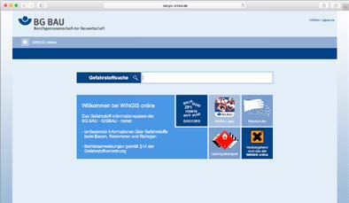

2 Grundlagen für den Arbeitsschutz
2.1 Was für alle gilt!
Von der betriebsärztlichen und sicherheitstechnischen Betreuung über die Unterweisung
und Gefährdungsbeurteilung bis hin zur Ersten Hilfe: Wer die Sicherheit
und Gesundheit seiner Mitarbeiterinnen und Mitarbeiter systematisch in allen
Prozessen berücksichtigt und diese dabei beteiligt, schafft eine solide Basis für
einen gut organisierten Arbeitsschutz.
Als Unternehmerin oder Unternehmer sind Sie für die Sicherheit
und Gesundheit Ihrer Beschäftigten in Ihrem
Unternehmen verantwortlich. Dazu verpflichtet Sie das
Arbeitsschutzgesetz. Doch es gibt viele weitere gute Gründe,
warum Arbeitssicherheit und Gesundheitsschutz in
Ihrem Unternehmen wichtig sein sollten. So sind Beschäftigte,
die in einer sicheren und gesunden Umgebung arbeiten,
nicht nur weniger häufig krank, sie arbeiten auch
engagierter und motivierter. Mehr noch: Investitionen in
den Arbeitsschutz lohnen sich für Unternehmen nachweislich
auch ökonomisch.
Die gesetzliche Unfallversicherung unterstützt Sie bei der
Einrichtung des Arbeitsschutzes in Ihrem Unternehmen. Der
erste Schritt: Setzen Sie die grundsätzlichen Präventionsmaßnahmen
um, die auf den folgenden Seiten beschrieben
sind. Sie bieten Ihnen die beste Grundlage für einen gut organisierten
Arbeitsschutz und stellen die Weichen für weitere
wichtige Präventionsmaßnahmen in Ihrem Unternehmen.
 Verantwortung und Aufgabenübertragung Verantwortung und Aufgabenübertragung
Die Verantwortung für die Sicherheit und Gesundheit
Ihrer Beschäftigten liegt bei Ihnen als Unternehmerin
oder Unternehmer. Das heißt, dass Sie die Arbeiten in
Ihrem Betrieb so organisieren müssen, dass eine Gefährdung
für Leben und Gesundheit möglichst vermieden wird
und die Belastung Ihrer Beschäftigten nicht über deren
individuelle Leistungsfähigkeit hinausgeht. |
Diese Aufgabe können Sie auch schriftlich an andere zuverlässige
und fachkundige Personen im Unternehmen
übertragen. Sie sind jedoch dazu verpflichtet, regelmäßig
zu prüfen, ob diese Personen ihre Aufgabe erfüllen. Legen
Sie bei Bedarf Verbesserungsmaßnahmen fest. Insbesondere
nach einem Arbeitsunfall oder nach Auftreten einer
Berufskrankheit müssen deren Ursachen ermittelt und die
Arbeitsschutzmaßnahmen angepasst werden.
 Betriebsärztliche und sicherheitstechnische
Betreuung Betriebsärztliche und sicherheitstechnische
Betreuung
Unterstützung bei der Einrichtung von sicheren und gesunden
Arbeitsplätzen erhalten Sie von den Fachkräften
für Arbeitssicherheit, Betriebsärztinnen und Betriebsärzten
sowie Ihrem Unfallversicherungsträger. Die DGUV Vorschrift
2 gibt vor, in welchem Umfang Sie diese betriebsärztliche
und sicherheitstechnische Betreuung
gewährleisten müssen. |
 Sicherheitsbeauftragte Sicherheitsbeauftragte
Arbeiten in Ihrem Unternehmen mehr als 20 Beschäftigte,
müssen Sie zusätzlich Sicherheitsbeauftragte bestellen.
Sicherheitsbeauftragte sind Mitarbeiterinnen und
Mitarbeiter Ihres Unternehmens, die Sie ehrenamtlich
neben ihren eigentlichen Aufgaben bei der Verbesserung
der Arbeitssicherheit und des Gesundheitsschutzes unterstützen.
Sie achten z. B. darauf, dass Schutzvorrichtungen
und -ausrüstungen vorhanden sind und weisen ihre Kolleginnen
und Kollegen auf sicherheits- oder gesundheitswidriges
Verhalten hin. So geben sie Ihnen verlässliche
Anregungen zur Verbesserung des Arbeitsschutzes. |
 Qualifikation für den Arbeitsschutz Qualifikation für den Arbeitsschutz
Wirksamer Arbeitsschutz erfordert fundiertes Wissen.
Stellen Sie daher sicher, dass alle Personen in Ihrem
Unternehmen, die mit Aufgaben im Arbeitsschutz betraut
sind, ausreichend qualifiziert sind. Geben Sie diesen Personen
die Möglichkeit, an Aus- und-Fortbildungsmaßnahmen
teilzunehmen. Die Berufsgenossenschaften, Unfallkassen
und die Deutsche Gesetzliche Unfallversicherung
bieten hierzu vielfältige Seminare sowie Aus- und Fortbildungsmöglichkeiten
an. |
 Beurteilung der Arbeitsbedingungen und
Dokumentation (Gefährdungsbeurteilung) Beurteilung der Arbeitsbedingungen und
Dokumentation (Gefährdungsbeurteilung)
Wenn die Gefahren für Sicherheit und Gesundheit am
Arbeitsplatz nicht bekannt sind, kann sich auch niemand
davor schützen. Eine der wichtigsten Aufgaben des Arbeitsschutzes
ist daher die Beurteilung der Arbeitsbedingungen,
auch „Gefährdungsbeurteilung“ genannt. Diese
hat das Ziel, für jeden Arbeitsplatz in Ihrem Unternehmen
mögliche Gefährdungen für die Sicherheit und Gesundheit
Ihrer Beschäftigten festzustellen und Maßnahmen zur
Beseitigung dieser Gefährdungen festzulegen. Beurteilen Sie dabei sowohl die körperlichen als auch die psychischen
Belastungen Ihrer Beschäftigten. Beachten Sie
Beschäftigungsbeschränkungen und -verbote, z. B. für
Jugendliche, Schwangere und stillende Mütter, insbesondere
im Hinblick auf schwere körperliche Arbeiten sowie
den Umgang mit Gefahrstoffen. Es gilt: Gefahren müssen
immer direkt an der Quelle beseitigt oder vermindert werden.
Wo dies nicht vollständig möglich ist, müssen Sie
Schutzmaßnahmen nach dem T-O-P-Prinzip ergreifen. Das
heißt, Sie müssen zuerst technische (T), dann organisatorische
(O) und erst zuletzt personenbezogene (P) Maßnahmen
festlegen und durchführen. Mit der anschließenden
Dokumentation der Gefährdungsbeurteilung kommen
Sie nicht nur Ihrer Nachweispflicht nach, sondern erhalten
auch eine Übersicht der Arbeitsschutzmaßnahmen in
Ihrem Unternehmen. So lassen sich auch Entwicklungen
nachvollziehen und Erfolge aufzeigen. |
 Arbeitsmedizinische Maßnahmen Arbeitsmedizinische Maßnahmen
Ein unverzichtbarer Baustein im Arbeitsschutz Ihres
Unternehmens ist die arbeitsmedizinische Prävention. Dazu
gehören die Beteiligung des Betriebsarztes oder der Betriebsärztin
an der Gefährdungsbeurteilung, die Durchführung
der allgemeinen arbeitsmedizinischen Beratung sowie die
arbeitsmedizinische Vorsorge mit individueller arbeitsmedizinischer
Beratung der Beschäftigten. Ergibt die Vorsorge,
dass bestimmte Maßnahmen des Arbeits- und Gesundheitsschutzes
ergriffen werden müssen, so müssen Sie diese für
die betroffenen Beschäftigten in die Wege leiten. |
 Unterweisung Unterweisung
Ihre Beschäftigten können nur dann sicher und
gesund arbeiten, wenn sie über die Gefährdungen an
ihrem Arbeitsplatz sowie ihre Pflichten im Arbeitsschutz
informiert sind und die erforderlichen Maßnahmen und
betrieblichen Regeln kennen. Hierzu gehören auch die
Betriebsanweisungen. Deshalb ist es wichtig, dass Ihre
Beschäftigten eine Unterweisung möglichst an ihrem Arbeitsplatz
erhalten. Diese kann durch Sie selbst oder eine
von Ihnen beauftragte zuverlässige und fachkundige Person
durchgeführt werden. Setzen Sie Beschäftigte aus
Zeitarbeitsunternehmen ein, müssen Sie diese so unterweisen
wie Ihre eigenen Mitarbeiterinnen und Mitarbeiter.
Betriebsärztin, -arzt oder Fachkraft für Arbeitssicherheit
können hierbei unterstützen. Die Unterweisung muss
mindestens einmal jährlich erfolgen und dokumentiert werden. Bei Jugendlichen ist dies halbjährlich erforderlich.
Zusätzlich müssen Sie für Ihre Beschäftigten eine
Unterweisung sicherstellen
- vor Aufnahme einer Tätigkeit,
- bei Zuweisung einer anderen Tätigkeit,
- bei Veränderungen im Aufgabenbereich und Veränderungen in den Arbeitsabläufen.
|
 Zugang zu Vorschriften und Regeln Zugang zu Vorschriften und Regeln
Machen Sie die für Ihr Unternehmen relevanten
Unfallverhütungsvorschriften sowie die einschlägigen
staatlichen Vorschriften und Regeln an geeigneter Stelle
für alle zugänglich. So sorgen Sie nicht nur dafür, dass
Ihre Beschäftigten über die notwendigen Präventionsmaßnahmen
informiert werden, Sie zeigen ihnen auch,
dass Sie Arbeitssicherheit und Gesundheitsschutz ernst
nehmen. Bei Fragen zum Vorschriften- und Regelwerk hilft
Ihnen Ihr Unfallversicherungsträger weiter. |
 Brandschutz- und Notfallmaßnahmen Brandschutz- und Notfallmaßnahmen
Im Notfall müssen Sie und Ihre Beschäftigten
schnell und zielgerichtet handeln können. Daher gehören
die Organisation des betrieblichen Brandschutzes, aber
auch die Vorbereitung auf sonstige Notfallmaßnahmen,
wie zum Beispiel die geordnete Evakuierung Ihrer Arbeitsstätte,
zum betrieblichen Arbeitsschutz. Lassen Sie daher
so viele Beschäftigte wie möglich zu Brandschutzhelferinnen
und Brandschutzhelfern ausbilden, empfehlenswert
sind mindestens fünf Prozent der Belegschaft. Empfehlenswert
ist auch die Bestellung einer Mitarbeiterin oder
eines Mitarbeiters zum Brandschutzbeauftragten. Das
zahlt sich im Notfall aus. Damit Entstehungsbrände wirksam
bekämpft werden können, müssen Sie Ihren Betrieb
mit geeigneten Feuerlöscheinrichtungen, wie zum Beispiel
tragbaren Feuerlöschern, ausstatten und alle Mitarbeiterinnen
und Mitarbeiter mit deren Benutzung durch
regelmäßige Unterweisung vertraut machen. |
 Erste Hilfe Erste Hilfe
Die Organisation der Ersten Hilfe in Ihrem Betrieb
gehört zu Ihren Grundpflichten. Unter Erste Hilfe versteht
man alle Maßnahmen, die bei Unfällen, akuten Erkrankungen,
Vergiftungen und sonstigen Notfällen bis zum
Eintreffen des Rettungsdienstes, eines Arztes oder einer
Ärztin erforderlich sind. Dazu gehört zum Beispiel: Unfallstelle
absichern, Verunglückte aus akuter Gefahr retten,
Notruf veranlassen, lebensrettende Sofortmaßnahmen durchführen sowie Betroffene betreuen. Den Grundbedarf
an Erste-Hilfe-Material decken der „Kleine Betriebsverbandkasten“
nach DIN 13157 bzw. der „Große Betriebsverbandkasten“ nach DIN 13169 ab.
Zusätzlich können ergänzende Materialien aufgrund betriebsspezifischer Gefährdungen erforderlich sein. |
Je nachdem wie viele Beschäftigte in Ihrem Unternehmen
arbeiten, müssen Ersthelferinnen und Ersthelfer in ausreichender
Anzahl zur Verfügung stehen. Diese Aufgabe können
alle Beschäftigten übernehmen. Voraussetzung ist
die erfolgreiche Fortbildung in einem Erste-Hilfe-Lehrgang
und die regelmäßige Auffrischung alle zwei Jahre (
Erste-Hilfe-Fortbildung). Die Lehrgangsgebühren werden
von den Berufsgenossenschaften und Unfallkassen getragen.
Beachten Sie, dass auch im Schichtbetrieb und während
der Urlaubszeit genügend Ersthelferinnen und -helfer
anwesend sein müssen.
|
Wie viele Ersthelferinnen und Ersthelfer?
|
Bei 2 bis zu 20 anwesenden Versicherten |
eine Ersthelferin bzw. ein Ersthelfer |
Bei mehr als 20 anwesenden Versicherten
a) in Verwaltungs- und Handelsbetrieben
b) in sonstigen Betrieben
c) in Kindertageseinrichtungen
d) in Hochschulen |
5 %
10 %
eine Ersthelferin
bzw. ein Ersthelfer
je Kindergruppe
10 % der Versicherten
nach § 2 Absatz 1 Nummer 1 SGB VII |
 Regelmäßige Prüfung der Arbeitsmittel Regelmäßige Prüfung der Arbeitsmittel
Schäden an Arbeitsmitteln können zu Unfällen
führen. Daher müssen die in Ihrem Unternehmen eingesetzten
Arbeitsmittel regelmäßig kontrolliert und je nach
Arbeitsmittel geprüft werden. Vor der Verwendung eines
Arbeitsmittels muss dieses durch Inaugenscheinnahme,
ggf. durch eine Funktionskontrolle, auf offensichtliche
Mängel kontrolliert werden, die so schnell entdeckt werden
können. Neben diesen Kontrollen müssen Sie für
wiederkehrende Prüfungen in angemessenen Zeitabständen
sorgen. Wie, von wem und in welchen Abständen dies
geschehen soll, beschreiben die TRBS 1201 und die TRBS 1203 (siehe Infobox „Rechtliche Grundlagen“). Im
Einschichtbetrieb hat sich bei vielen Arbeitsmitteln ein
Prüfabstand von einem Jahr bewährt. Die Ergebnisse der
Prüfungen müssen Sie mindestens bis zur nächsten Prüfung
aufbewahren. |
 Planung und Beschaffung Planung und Beschaffung
Es lohnt sich, das Thema Sicherheit und Gesundheit
von Anfang an in allen betrieblichen Prozessen zu berücksichtigen.
Wenn Sie schon bei der Planung von Arbeitsstätten
und Anlagen sowie dem Einkauf von Arbeitsmitteln
und Arbeitsstoffen an die Sicherheit und Gesundheit
Ihrer Beschäftigten denken, erspart Ihnen dies (teure)
Nachbesserungen. |
 Barrierefreiheit Barrierefreiheit
Denken Sie auch an die barrierefreie Gestaltung der
Arbeitsräume in Ihrem Unternehmen. Barrierefreiheit
kommt nicht nur Ihren Mitarbeiterinnen und Mitarbeitern
mit Behinderung zugute, Ihre gesamte Belegschaft kann
davon profitieren. So können zum Beispiel ausreichend
breite Wege oder Armaturen, Lichtschalter und Türgriffe,
die gut erreichbar sind, sowie trittsichere Bodenbeläge
Unfallrisiken senken und zu weitaus geringeren Belastungen
und Beanspruchungen führen. |
 Gesundheit im Betrieb Gesundheit im Betrieb
Gesundheit ist die wichtigste Voraussetzung, damit
Ihre Mitarbeiterinnen und Mitarbeiter bis zum Rentenalter
beschäftigungs- und leistungsfähig bleiben. Frühzeitige
Maßnahmen, die arbeitsbedingte physische und
psychische Belastungen verringern helfen, zahlen sich
doppelt aus – sowohl für die Mitarbeiter als auch den
Betrieb. Dazu gehören die Gestaltung sicherer und gesunder
Arbeitsplätze und ein Betriebliches Eingliederungsmanagement
(BEM). Auch die Stärkung eines gesundheitsbewussten
Verhaltens Ihrer Beschäftigten und die
Schaffung gesundheitsförderlicher Arbeitsbedingungen
tragen zur Gesundheit Ihrer Beschäftigten bei. Ein Tipp:
Ihre Mitarbeiterinnen und Mitarbeiter wissen oft am besten,
was sie an ihrem Arbeitsplatz beeinträchtigt. Beziehen
Sie sie daher in Ihre Überlegungen für Verbesserungsmaßnahmen
mit ein. Das sorgt auch für motivierte Beschäftigte. |
 Fremdfirmen, Lieferanten und Einsatz auf
fremdem Betriebsgelände Fremdfirmen, Lieferanten und Einsatz auf
fremdem Betriebsgelände
Auf Ihrem Betriebsgelände halten sich Fremdfirmen und
Lieferanten auf? Hier können ebenfalls besondere Gefährdungen
entstehen. Treffen Sie die erforderlichen Regelungen
und sorgen Sie dafür, dass diese Personen die betrieblichen
Arbeitsschutzregelungen Ihres Unternehmens kennen und beachten. |
Arbeiten Sie bzw. Ihre Beschäftigten auf fremdem Betriebsgelände,
gilt dies umgekehrt auch für Sie: Sorgen Sie auch in Sachen Arbeitssicherheit für eine ausreichende
Abstimmung mit dem Unternehmen, auf dessen Betriebsgelände Sie im Einsatz sind.
 Integration von zeitlich befristet
Beschäftigten Integration von zeitlich befristet
Beschäftigten
Die Arbeitsschutzanforderungen in Ihrem Unternehmen
gelten für alle Beschäftigten – auch für Mitarbeiterinnen
und Mitarbeiter, die nur zeitweise in Ihrem Betrieb arbeiten,
wie zum Beispiel Zeitarbeitnehmerinnen und -arbeitnehmer
sowie Praktikantinnen und Praktikanten. Stellen
Sie sicher, dass diese Personen ebenfalls in den betrieblichen
Arbeitsschutz eingebunden sind. |
|
Allgemeine Informationen
|
- Datenbank Vorschriften, Regeln und Informationen der gesetzlichen Unfallversicherung:
▶ www.dguv.de/publikationen
- Kompetenz-Netzwerk Fachbereiche Prävention:
▶ www.dguv.de (Webcode: d36139)
- Datenbank der gesetzlichen Unfallversicherung zu Bio- und Gefahrstoffen (GESTIS):
▶ www.dguv.de (Webcode: d3380)
- Arbeitsschutzgesetz und -verordnungen:
▶ www.gesetze-im-internet.de
- Technische Regeln zu Arbeitsschutzverordnungen:
▶ www.baua.de
|
2.2 Was für die Branche gilt
|
Rechtliche Grundlagen
|
Mitbestimmungsrechte
- Betriebsverfassungsgesetz (BetrVG)
- Bundespersonalvertretungsgesetz (BPersVG)
- Personalvertretungsgesetze der Länder
- § 176 Sozialgesetzbuch Neuntes Buch (SGB IX) - Rehabilitation und Teilhabe von Menschen mit Behinderung
Reinigung und HygieneArbeitsmedizinische Vorsorge
- § 6 des Arbeitszeitgesetzes (ArbZG)
- § 3 der Verordnung zur arbeitsmedizinischen Vorsorge (ArbMedVV) in Verbindung mit Anhang Arbeitsmedizinische Pflicht- und Angebotsvorsorge, Teil 4 (2)
- Bekanntmachung von Empfehlungen von Arbeitsmedizinischen Regeln (AMR) Nr. 2.1 „Fristen für die Veranlassung / das Angebot von arbeitsmedizinischen Vorsorgeuntersuchungen“
- Bekanntmachung von Empfehlungen von Arbeitsmedizinischen Regeln (AMR) Nr. 5.1 „Anforderungen an das Angebot von arbeitsmedizinischer Vorsorge“
- Bekanntmachung von Empfehlungen von Arbeitsmedizinischen Regeln (AMR) Nr. 14.1 „Angemessene Untersuchung der Augen und des Sehvermögens“
Unterbrechung BildschirmtätigkeitBarrierefreie Arbeitsmittel
- § 4 des Behindertengleichstellungsgesetzes (BGG)
- § 4 der Barrierefreie-Informationstechnik-Verordnung (BITV 2.0)
|
Betriebliche Interessenvertretung
Sofern in Ihrem Unternehmen ein Betriebs- oder Personalrat
besteht, sind Sie verpflichtet, diesen in vielen Fragen
des Arbeits- und Gesundheitsschutzes einzubinden. Zu
den allgemeinen Aufgaben des Betriebs- oder Personalrates
gehören die Überwachung der zugunsten der Arbeitnehmerinnen
und Arbeitnehmer bestehenden Schutzvorschriften und auch die Förderung von Maßnahmen
zum Arbeitsschutz. Grundsätzlich sind bei Maßnahmen
des Arbeitsschutzes Mitwirkungs- und Mitbestimmungsrechte
berührt.
Die frühzeitige Information und die Einbindung der betrieblichen
Interessenvertretung der Beschäftigten (Betriebs-
oder Personalrat, Mitarbeitervertretung, Schwerbehindertenvertretung)
können bei den vielfältigen Themen
des Arbeits- und Gesundheitsschutzes von Vorteil sein.
Reinigung
Regelmäßige Reinigungsarbeiten sind in Ihrem Unternehmen
bestimmt eine Selbstverständlichkeit. Wussten Sie,
dass Reinigungsmittel auch Gefahrstoffe sein können?
Häufig enthalten Reinigungsmittel Lösemittel, Säuren
oder Laugen. Achten Sie deshalb darauf, dass möglichst
Reinigungsmittel ohne Gefahrstoffe eingesetzt werden.
Wenn Sie einen Dienstleister mit den Reinigungsarbeiten
beauftragen, sollten Sie mit diesem eine entsprechende
Vereinbarung schließen.
Wichtige Informationen zu den Bestandteilen von Reinigungsmitteln
und davon ausgehenden möglichen Gefährdungen
können Sie den Sicherheitsdatenblättern zu den
Produkten entnehmen. Diese müssen vom Hersteller zur
Verfügung gestellt werden. Die Sicherheitsdatenblätter
enthalten Informationen zum Umgang und zur Anwendung
des Reinigungsmittels sowie Hinweise zu Maßnahmen,
um Gefährdungen zu vermeiden. Sie sind ein wichtiges
Hilfsmittel, um Betriebsanweisungen zu erstellen und
Beschäftigte zu unterweisen.
Hinweis: Viele Sicherheitsdatenblätter und weitere
Hilfsmittel (auch zu Reinigungsmittel) stehen Ihnen in der Wingis-Online Datenbank zur Verfügung.
▶ www.wingis-online.de
 |
Achten Sie darauf, dass Reinigungsmittel nicht zusammen
mit Lebensmitteln aufbewahrt werden (z. B. der Entkalker
steht neben Zucker und Kaffee im Schrank des Pausenraums).
Reinigungsmittel sollten so aufbewahrt werden,
dass sie nur den Personen zugänglich sind, die mit den
Reinigungsarbeiten beauftragt sind. Sie sollten in geschlossenen
Behältern aufbewahrt werden. Es handelt
sich dabei möglichst um Originalbehälter oder die Originalverpackung
und nicht um Behälter, durch deren Form
oder Bezeichnung der Inhalt verwechselt werden kann.
Lassen Sie die bei Reinigungsarbeiten verwendeten elektrischen
Geräte (z. B. Staubsauger) regelmäßig auf einen
betriebssicheren Zustand und elektrische Sicherheit
überprüfen.
Reinigung von Arbeitsmitteln, Hygiene
Grundsätzlich ist eine regelmäßige Reinigung von Arbeitsmitteln
vorzusehen. Bitte beachten Sie dabei die Reinigungshinweise
des Herstellers und achten Sie darauf,
dass die Reinigungsmittel hautverträglich sind.
Durch die gemeinsame Verwendung von Tastatur, Maus
und Headset von mehreren Personen können Krankheitserreger
übertragen werden.
Stellen Sie Ihren Beschäftigten möglichst persönliche
Arbeitsmittel zur Verfügung. Werden Arbeitsplätze von
mehreren Personen benutzt, muss der Arbeitsplatz für
einen schnellen Wechsel von Tastatur, Maus und Headset
geeignet sein. Andernfalls ist darauf zu achten, dass die
Arbeitsmittel häufiger gereinigt werden. Üblicherweise
erfolgt dies zu Beginn oder am Ende einer Arbeitsschicht.
Arbeitsmedizinische Vorsorge
Beschäftigte in Büros arbeiten in der Regel an Bildschirmarbeitsplätzen.
Diesen Beschäftigten müssen Sie in regelmäßigen
Abständen eine arbeitsmedizinische Vorsorge
anbieten (sogenannte Angebotsvorsorge). Diese umfasst
immer ein ärztliches Gespräch und eine ärztliche Beratung
und, sofern die Beschäftigten dies wünschen, einen
Sehtest.
Vermuten Beschäftigte einen Zusammenhang zwischen
Gesundheitsbeschwerden und ihrer Tätigkeit, müssen Sie
ebenfalls eine arbeitsmedizinische Vorsorge (als Wunschvorsorge)
ermöglichen, es sei denn aufgrund der Beurteilung
der Arbeitsbedingungen und der getroffenen Schutzmaßnahmen
ist nicht mit einem Gesundheitsschaden zu
rechnen.
Die Ergebnisse der arbeitsmedizinischen Vorsorge erhalten
ausschließlich die Arbeitnehmerin oder der Arbeitnehmer.
Diese entscheiden über eine Weitergabe.
Pausen – Unterbrechungen der
Bildschirmtätigkeit
Für ein beschwerdefreies und produktives Arbeiten im
Büro wird die Tätigkeit am besten so organisiert, dass die
tägliche Arbeit regelmäßig durch andere Tätigkeiten oder
Erholungszeiten (Pausen) unterbrochen wird. Die Forderung
nach regelmäßiger Unterbrechung der Bildschirmarbeit
durch Tätigkeitsanteile, die vom Bildschirm unabhängig
sind, wird durch das Konzept der Mischarbeit
verwirklicht. Hierbei werden verschiedene Tätigkeiten mit
unterschiedlichen Anforderungen kombiniert, wodurch
einseitige Belastungen vermieden werden. Dies betrifft
insbesondere den Bewegungsapparat, die Augen und die
Psyche.
Bei der Arbeit im Büro sollte auf wechselnde Körperhaltungen Wert gelegt werden.
Sind unterschiedliche Tätigkeitsanteile mit wechselnden
Belastungen nicht möglich, ist eine Unterbrechung der
täglichen Arbeit am Bildschirmgerät durch regelmäßige
kurze Erholungszeiten zu ermöglichen.
Mehrere kürzere Erholungszeiten haben einen höheren
Erholungseffekt als wenige längere Erholungszeiten gleicher
Gesamtdauer. Das Zusammenziehen oder das Aufsparen
von Erholungszeiten zur Verkürzung der täglichen
Gesamtarbeitszeit haben keinen Erholungseffekt und ist
deshalb ungeeignet. Günstig ist, wenn in den Erholungszeiten
Bewegungsübungen durchgeführt werden können.
In der Praxis haben sich Erholungszeiten bewährt, die pro
Stunde mindestens 5 min betragen.
Barrierefreie Arbeitsmittel
Damit Einrichtungen, Produkte und Software auch von
Menschen mit Behinderungen selbstständig genutzt
werden können, müssen diese barrierefrei sein. Dabei
schwingt im Begriff „barrierefrei“ stets auch die Bedeutung
von „universell nutzbar“ mit. Es geht also nicht um
Lösungen speziell für Menschen mit Behinderung,
sondern um ein erweitertes Nutzungskonzept, das möglichst
alle Zielgruppen einbezieht. Beispielsweise sollte
die in Ihrem Büro eingesetzte Software an die weitestreichenden
Bedürfnisse (z. B. Kontrast, Darstellungsgröße,
Informationsaufbereitung) der potenziellen Nutzer anpassbar sein.
„Barrierefrei sind … Systeme der Informationsverarbeitung,
akustische und visuelle Informationsquellen und
Kommunikationseinrichtungen …, wenn sie für Menschen
mit Behinderung in der allgemein üblichen Weise,
ohne besondere Erschwernis und grundsätzlich
ohne fremde Hilfe auffindbar, zugänglich und nutzbar
sind.“
Definition „Barrierefreiheit“ nach BGG § 4 |
 Bei der Beschaffung von Arbeitsmitteln kann die
Einhaltung der Mindestanforderungen an Sicherheit und Ergonomie durch das GS-Zeichen nachgewiesen werden. Sie sollten nur Arbeitsmittel mit GS-Zeichen beschaffen und sich auch das zugehörige Zertifikat aushändigen lassen. Bei der Beschaffung von Arbeitsmitteln kann die
Einhaltung der Mindestanforderungen an Sicherheit und Ergonomie durch das GS-Zeichen nachgewiesen werden. Sie sollten nur Arbeitsmittel mit GS-Zeichen beschaffen und sich auch das zugehörige Zertifikat aushändigen lassen.

Arbeitsmittel sind z. B. Bildschirm, Tastatur, Maus aber
auch Büromöblierung und Beleuchtung. |
Nichtraucherschutz
Tabakrauch enthält eine Vielzahl von Stoffen, von denen
viele eindeutig als krebserzeugend eingestuft werden. Als
Unternehmerin oder Unternehmer sind Sie daher verpflichtet,
die nicht rauchenden Beschäftigten in Arbeitsstätten
wirksam vor den Gesundheitsgefahren durch
Tabakrauch zu schützen. Sie können Ihrer Schutzpflicht
durch bauliche, technische oder organisatorische Maßnahmen
nachkommen. Möglich sind beispielsweise Trennung
von Rauchern und Nichtrauchern, Schaffung von
Raucherzonen oder lüftungstechnische Maßnahmen. Sie
können auch ein allgemeines Rauchverbot erlassen, beachten
Sie gegebenenfalls das Mitbestimmungsrecht der
Arbeitnehmervertretung. Eine Verpflichtung, ungestörtes
Rauchen zu gewährleisten, besteht nicht. Sinnvollerweise
werden solche Maßnahmen mit Angeboten zu Raucher-Entwöhnungsprogrammen kombiniert.
Denken Sie beim Einrichten einer Raucherzone auch an
den Brandschutz. Stellen Sie geeignete, brandsichere,
bestenfalls selbstlöschende Aschenbecher bereit. Achten
Sie bei der Entleerung der Aschenbecher darauf, dass
dies in geeignete Behältnisse geschieht. Grundsätzlich
sind Raucherzonen von brennbaren Materialien freizuhalten.